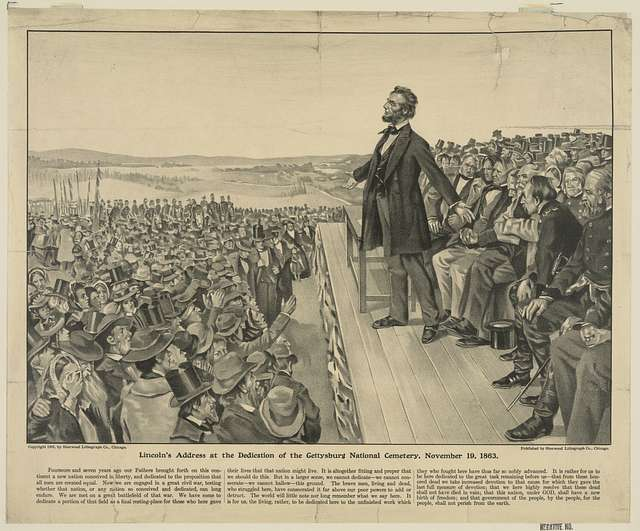

"Gettysburg Address"
Date:
November 19, 1863
Delivered by:
Abraham Lincoln
Location:
Gettysburg, Pennsylvania
Delivered in rememberance of the Battle of Gettysburg, the deadliest battle of the American Civil War.
The Gettysburg Address
by Abraham Lincoln
Four score and seven years ago our fathers brought forth on this continent,
a new nation, conceived in Liberty, and dedicated to the proposition that
all men are created equal.
Now we are engaged in a great civil war, testing whether that nation, or
any nation so conceived and so dedicated, can long endure. We are met on a
great battle-field of that war. We have come to dedicate a portion of that
field, as a final resting place for those who here gave their lives that
that nation might live. It is altogether fitting and proper that we should
do this.
But, in a larger sense, we can not dedicate -- we can not consecrate -- we
can not hallow -- this ground. The brave men, living and dead, who struggled
here, have consecrated it, far above our poor power to add or detract. The
world will little note, nor long remember what we say here, but it can never
forget what they did here. It is for us the living, rather, to be dedicated
here to the unfinished work which they who fought here have thus far so nobly
advanced. It is rather for us to be here dedicated to the great task remaining
before us -- that from these honored dead we take increased devotion to that
cause for which they gave the last full measure of devotion -- that we here
highly resolve that these dead shall not have died in vain -- that this
nation, under God, shall have a new birth of freedom -- and that government
of the people, by the people, for the people, shall not perish from the earth.